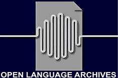

- ONLINE Emmi 07/05/92. Ian Green (compiler). 1992. Pacific And Regional Archive for Digital Sources in Endangered Cultures (PARADISEC). oai:cla.berkeley.edu:2016-09.001
- ONLINE Emmi 08/05/92. Ian Green (compiler). 1992. Pacific And Regional Archive for Digital Sources in Endangered Cultures (PARADISEC). oai:cla.berkeley.edu:2016-09.003
- ONLINE Emmi Field notes (1). Kate Charlwood (compiler). 1992. Pacific And Regional Archive for Digital Sources in Endangered Cultures (PARADISEC) oai:cla.berkeley.edu:2016-09.004
